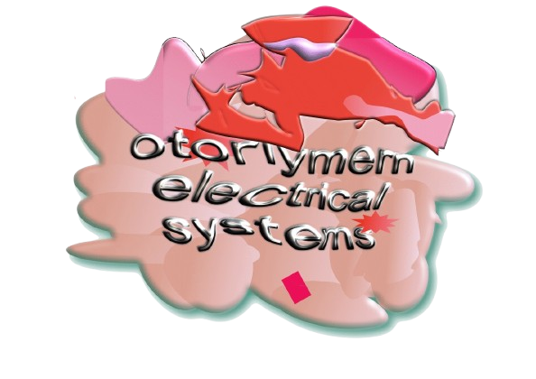
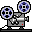

Here we are interested in providing information, creating, maintaining, and most importantly celebrating and participating in sound synthesis and the electronic systems used for such tasks (e.g. synthesizers), mechanical, electronic, and magnetic sound capturing/playback devices with variable time/pitch adjustment (e.g. tape recorders), optical display and capture devices (e.g. camcorders), and any electronic devices used to process, mix, distort, enhance or otherwise color visual or auditory impressions synthesized or captured by these means.
Otorlymern Electrical Systems, Solutions & Services or OES (with a modular S) provides electronic music and analog video systems, archival documents and educational information regarding A/V systems, and repair, upkeep, maintenance and refurbishing services of these systems, respectively.
Music
- Electronic music and its origin, history, and proliferation
- Archival documents for recording and performance
- Documents for upkeep, repair and creation of music systems
- Performance and recording techniques
- Tape machine maintenance and composition techniques
- Analog home recording techniques
- Synths, FX, compressors, mixers — anything with knobs
Video
- Capture and playback of analog video
- Synthesis of electronic visual images via feedback
- CRTs
- VHS, Hi8, and all tape formats
-  16mm film techniques: projecting, damaging, manipulating
Lit
Junk Fiction – a genre of raw autobiographical narratives exploring addiction, rooted in Burroughs' Junky and extended by authors like Nico Walker, Tony O’Neil, and Jim Carroll.
This section contains my short fiction, publications, and recommendations for indie presses, zines, and web-based publishers.
DIY
- DIY audio/video manipulation and glitch devices
- Audio and video schematics and circuits
- Designers of audio and video systems and circuits